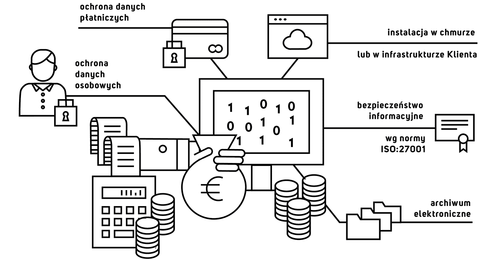

Rozwiązanie oferowane przez Vaterval jest stworzone zgodnie z wymaganiami branży finansowej, tym samym deklarujemy zgodność z:
zasadami ochrony danych osobowych
przepisami VAT w zakresie archiwów elektronicznych
zasadami ochrony danych płatniczych
normą ISO:27001 w zakresie bezpieczeństwa informacyjnego

Oprócz wersji saas nasz system dostępny jest w wersji do zainstalowania
w infrastrukturze klienta. Vaterval jest narzędziem bezpośrednio wspierającym zapewnianie zgodności z przyjętymi zasadami. Służy zarówno organizacji jak i osobom odpowiedzialnym za ład korporacyjny.